Plantasy, 2021. A group exhibition at the former Sorbus/Outo Olo art space on Vaasankatu 15 Helsinki, Finland.
Curated by Gladys Camilo and Jonni Korhonen in collaboration with Feminist Culture House.
Documentation by Jonni Korhonen
Further documentation at:Feminist Culture House: Plantasy
Exit Through the Loophole, 2021—A multi media performance festival and group performance at Vapaan Taiteen Tila in Helsinki, Finland.
Documentation by Amelia
Hosted by Varialambo and Catalysti ry.

I Think I Remembered Something Important, but Then I Forgot, 2021. Quilt and beading work, 18cm x 20cm.
1 to 100 Artshop, Katugalleria Mutteri, Curated by Hikari Nishida and Emil Lyytikkä.
The things I Carry Overwhelm Me, 2021. Quilt and beading work, 30cm x 30cm.
1 to 100 Artshop, Katugalleria Mutteri, Curated by Hikari Nishida and Emil Lyytikkä.
Spider's Nest, 2021. Digital print on Texmesh, 150 x 245cm.
What's the Use of Intersectionality, STOA, Curated by Feminist Culture House.
Futher documentation at: Feminist Culture House: What's the Use of Intersectionality
Self-Preservation, 2021. Naturally-dyed recycled cotton fabrc and hand-quilted with repurposed batting, 61cm x 42cm.
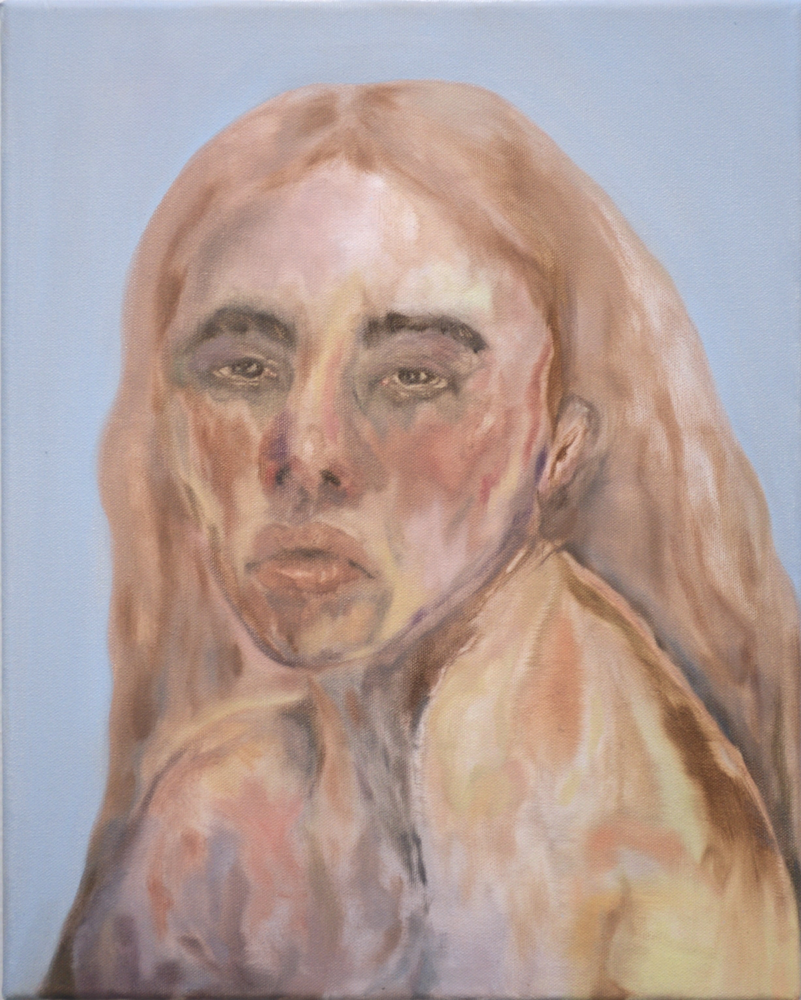Self-Portriat, 2020. Oil on canvas, 46cm x 55cm.
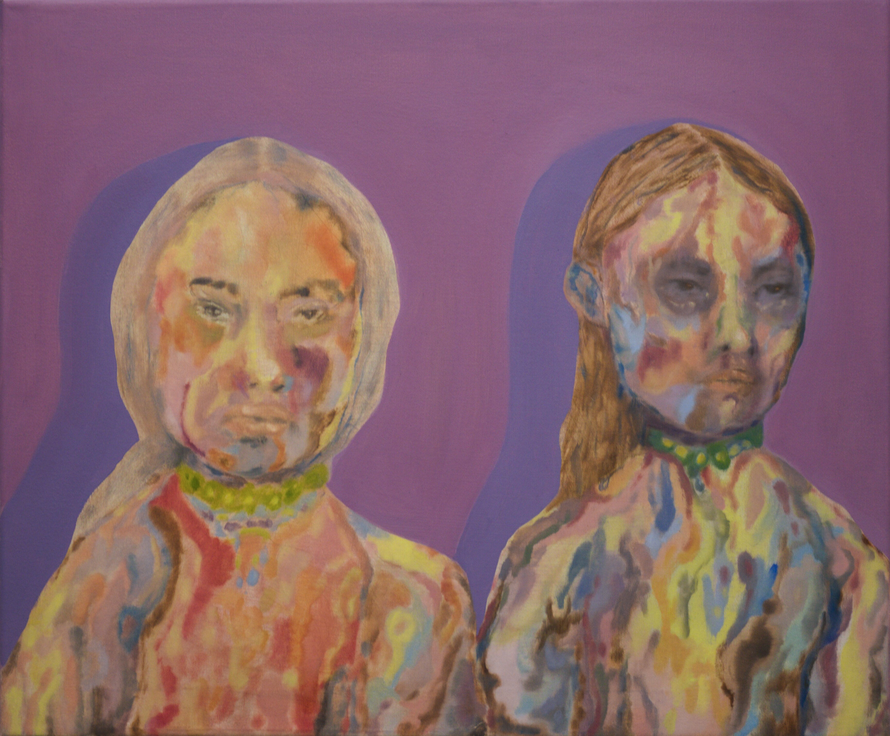We Watched Them Burn One Another; Evolve Into Ash, Only to Be Filled by it Once More, 2020. Oil on canvas, 55cm x 46cm.
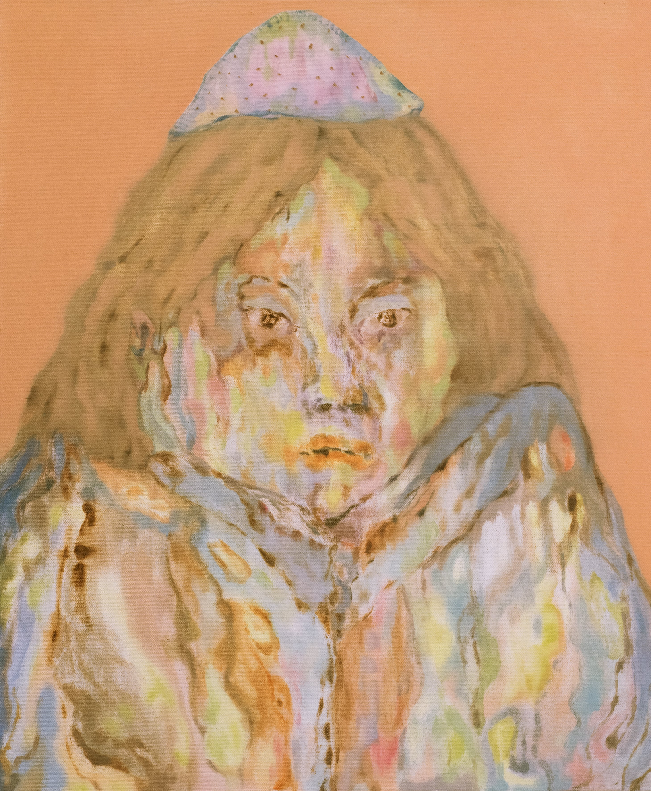I Saw You in a Dream; Waiting for Me to Remember Your Name, 2020. Oil on canvas, 50cm x 60cm.
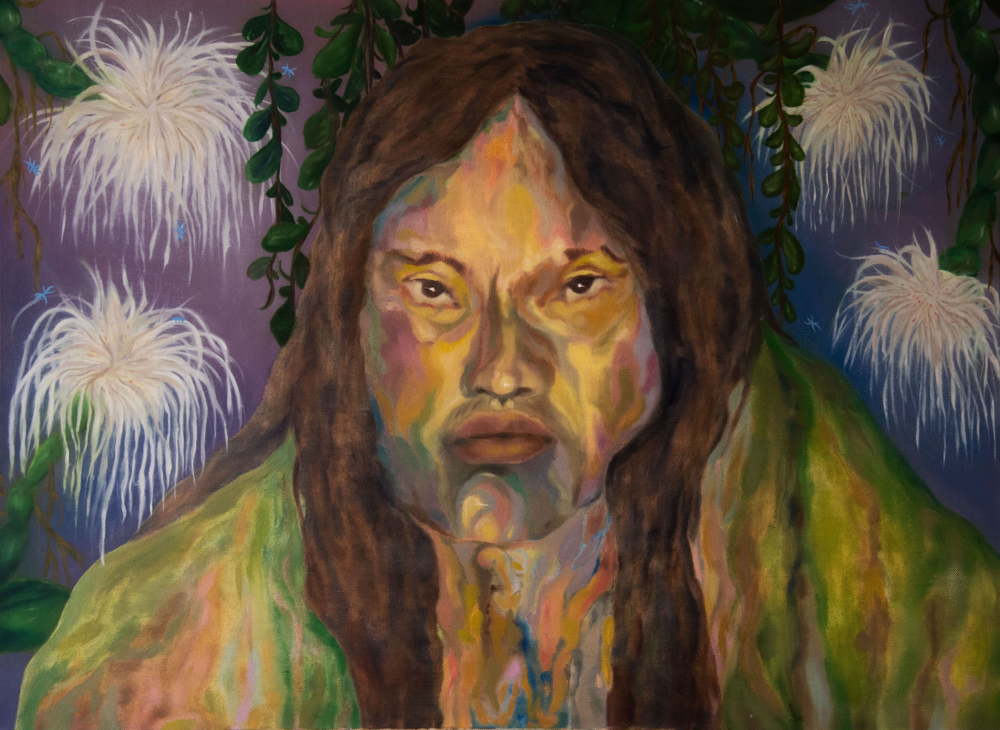Wild Dreams, 2020. Oil on canvas, 80cm x 60cm.
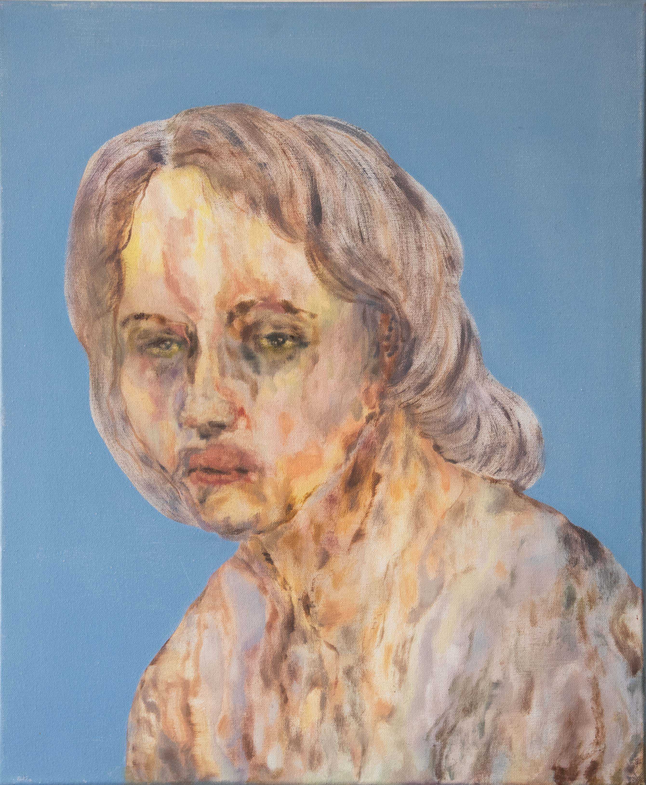Is It You? Or Is It Me?, 2020. Oil on canvas, 45cm x 55cm.
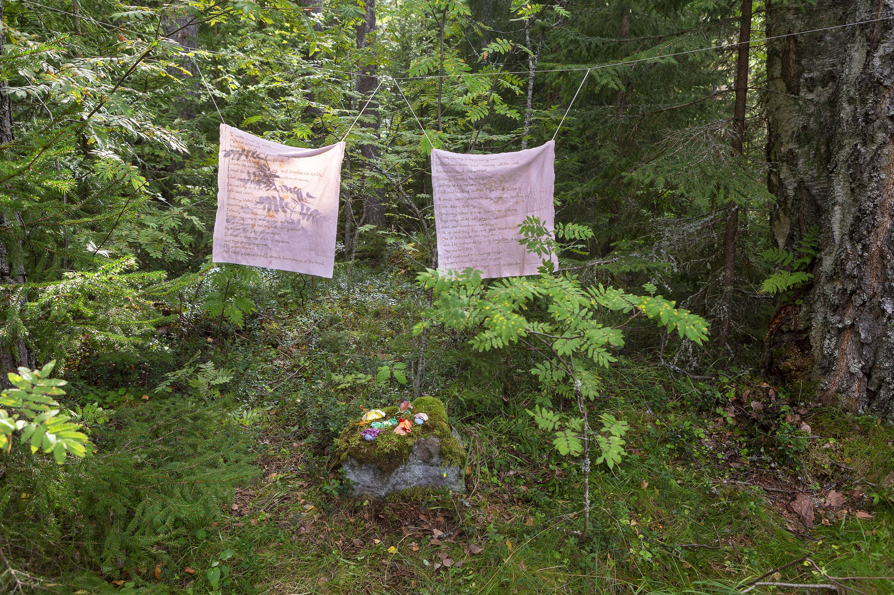 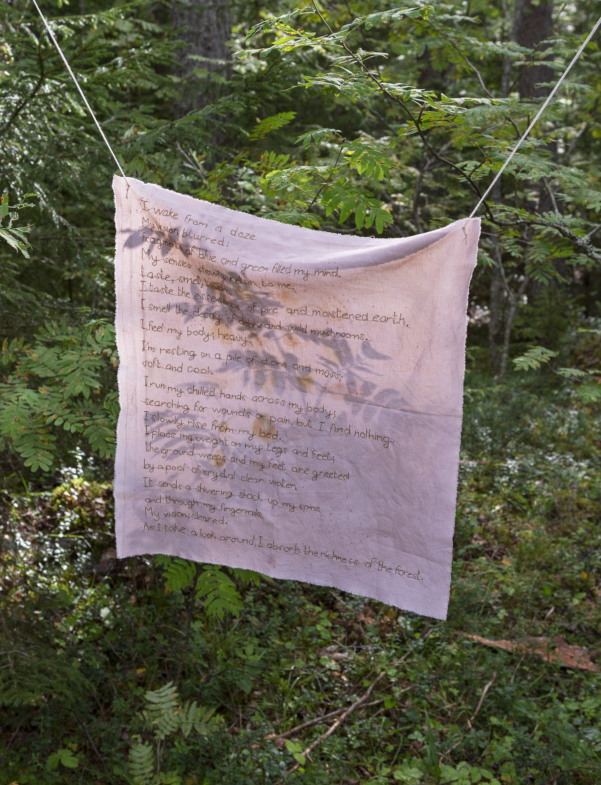 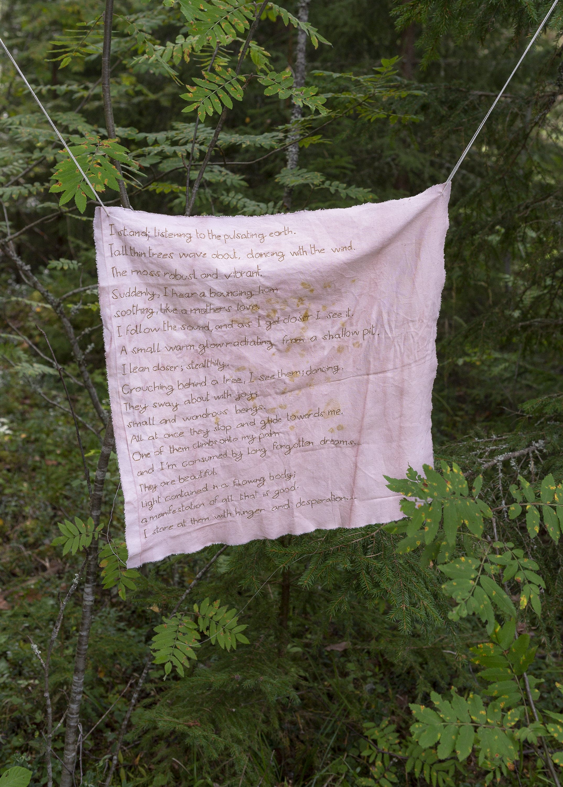
Nagual Forest, 2020. Clay sculptures and hand-stitched text on naturally dyed cotton fabric.
O Worm Supreme: A year-long Exhibition in a Forest, TUO TUO Arts, Curated by Liina Aalto-Setälä.
Futher documentation at: TUO TUO Arts
Investigation of Natural Dyes, 2019. Cotton and silk textiles hand-dyed and printed with foodwaste.
Self-Care Station, 2019. Makeshift vanity mirror with: hand-made rose infused oil, face tint and floral vase.
Wondering Where Does the Anguish Lie;They Screamed at Their Faces, 2019. Dyptich, oil on canvas, 30cm x 30cm.
Freedom to Roam Exhibition, Kruununvuori Forest.
They Screamed at Their Faces, 2019. Oil on canvas, 30cm x 30cm.
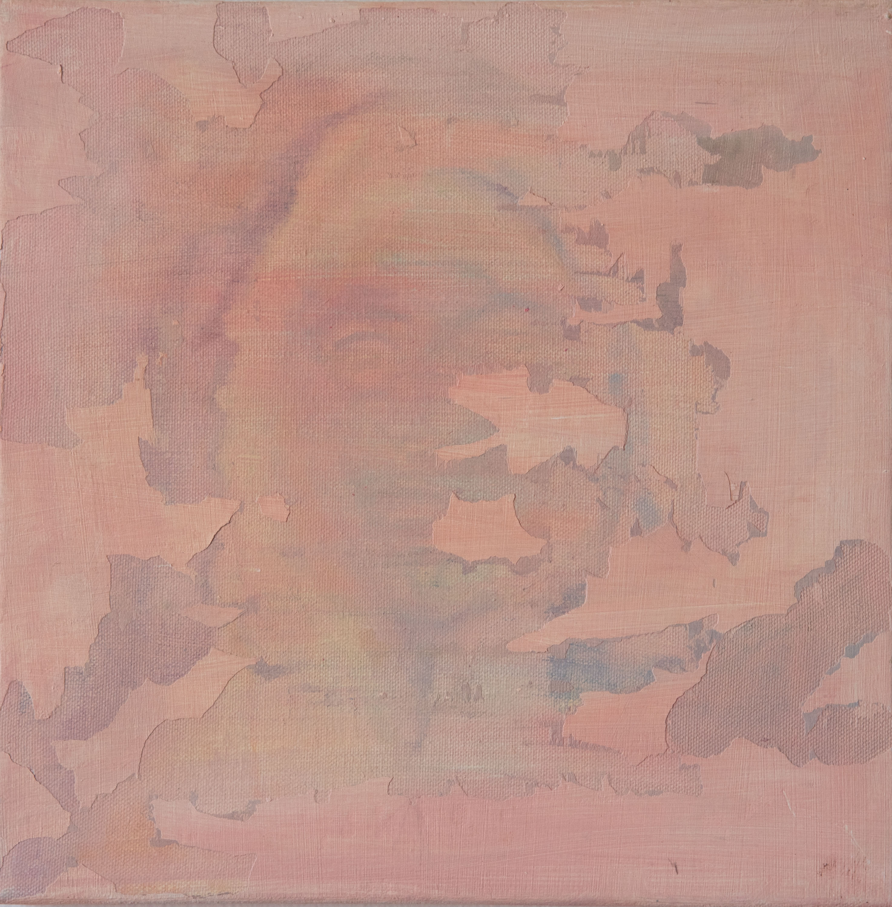Wondering Where Does the Anguish Lie, 2019. Oil on canvas, 30cm x30cm.
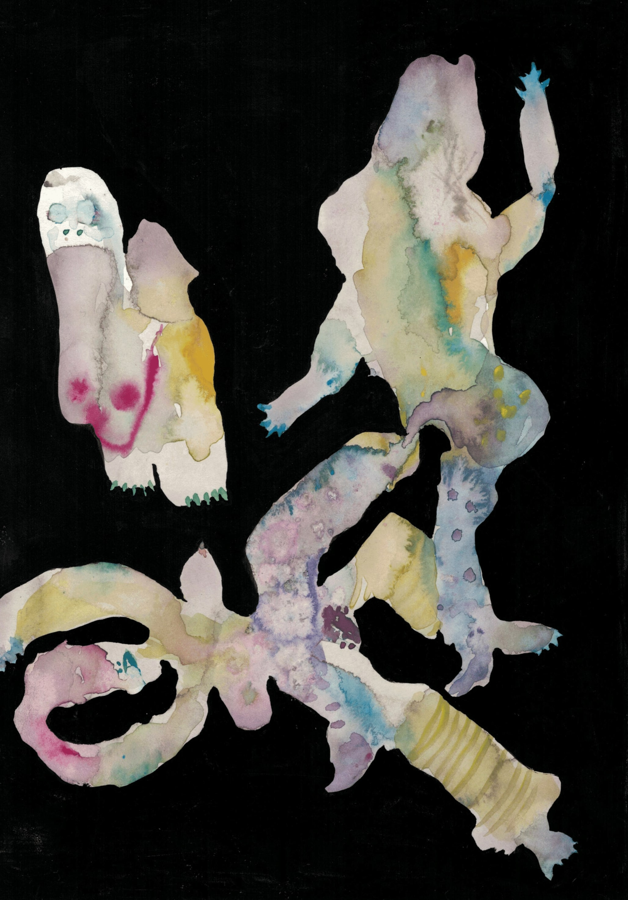Dancing Spirits, 2016. Watercolour on paper, 17cm x 25cm.

Cold Nights, 2016. Watercolour on paper, 25cm x 17cm.
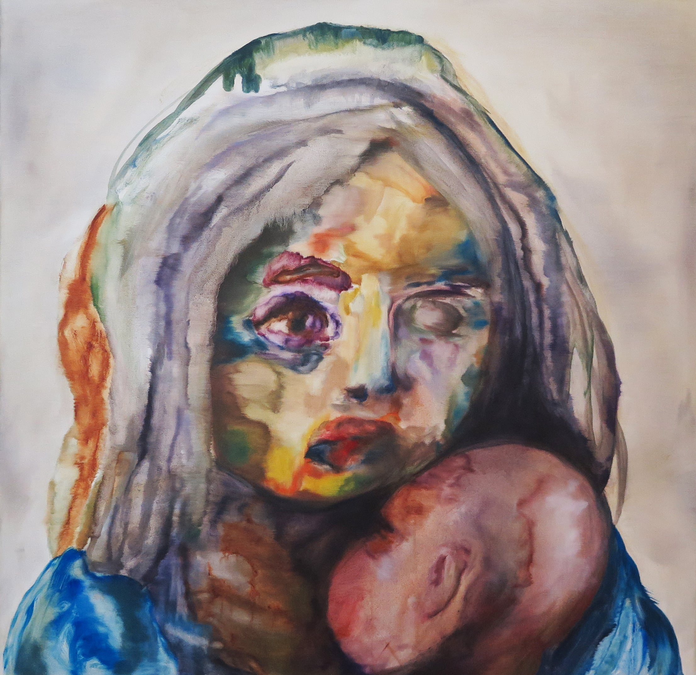At the Border II, 2016. Oil on canvas, 122cm x 122cm.
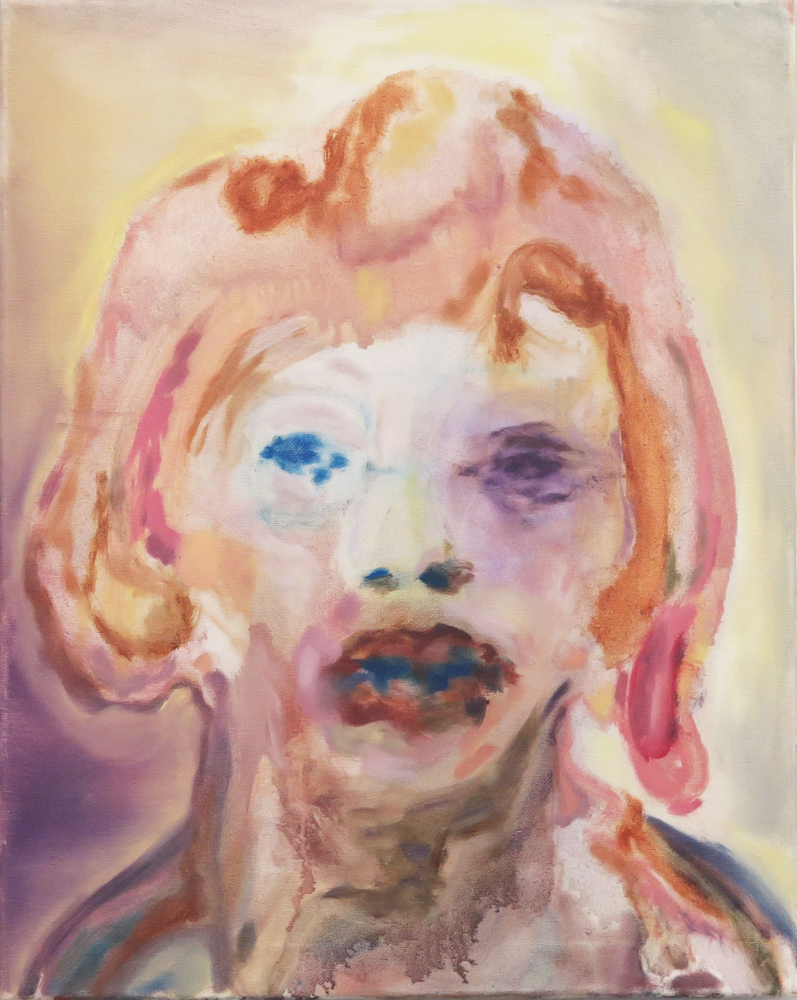Cio, 2016. Oil on canvas, 46cm x 70cm.
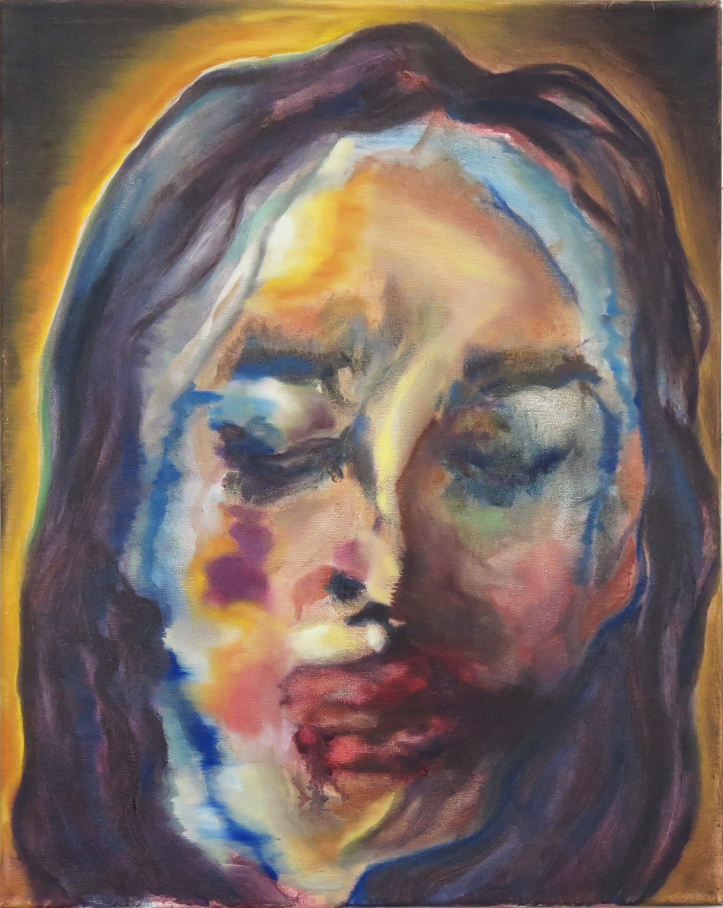Sandy, 2016. Oil on canvas, 46cm x 70cm.